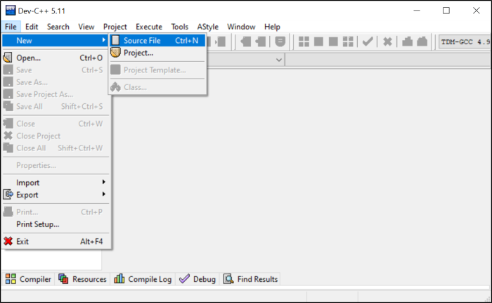
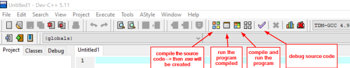
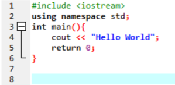
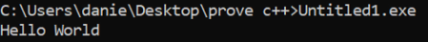

C++
New file with C++ IDE
easy example:•
#include <iostream> #include is a preprocessor directive that we use to load iostream header so we can use more functionalities like input and output operations that we need to print to the screen. Because iostream is Standard Header Files doesn't have the extension .h
•
using namespace std;
in the namespace std is defined the variable cout, if we don't want to use this line of code, at the line 4 we have to write
std::cout << “Hello World”;•
return 0 because the
main function in c++ is of type int, it should return an integer value. On most operating systems returning the value 0 is a success status meaning that the program has completed its execution without any errors.
With return 0, the console closes automatically to avoid that, before return 0 we can use one of the following commands.
◇
system(“PAUSE”); because system is a function declared in the library stdlib.h we also have to include it:
#include <stdlib.h> ◇
cin.ignore();To run our .exe file we can go also on the command line

{kind=link}
{kind=link}